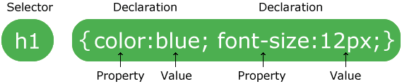

keyword : selektor css

Selektor CSS digunakan utk menemukan/menselect html elemen yang mau distyle.
Selektor CSS bisa dibagi ke 5 kategori :
memilih elemen html berdasarkan nama elemennya
div { <--- disini elemen div
color: red;
}
untuk setiap elemen div yang ada ubah warnanya jadi merah
memanfaatkan attr id dari elemen html, utk memilih elemen tertentu yg memiliki id tsb
tambahkan ' # ' sebelum value attr id tsb
#hehe { <--- dihtmlnya bgini <span id="hehe">
border: 1px solid black;
}
untuk setiap elemen yang memiliki attr id dengan nilai hehe tambahkan border 1px warna hitam
memanfaatkan attr class dari elemen html, utk memilih elemen tertentu yg memiliki class tsb
tambahkan ' . ' sebelum value attr class tsb
.para3 { <--- dihtmlnya bgini <h1 class="para3">
text-align: center;
}
untuk setiap elemen yang memiliki attr class dengan nilai para3 ubah rata teksnya jadi tengah
bisa juga jadi spesifikan elemen class yg dimaksud, jadi elemen lain yg punya class tsb tidak terpengaruh
div.hoho { <--- dihtmlnya bgini <div class="hoho">
color: orange;
}
untuk setiap elemen div yang memiliki attr class dengan nilai para3 ubah rata teksnya jadi tengah
memilih SEMUA ELEMEN HTML yg berada dalam tag html
hanya dengan ' * '
* {
color: white;
}
untuk semua elemen html ubah warnanya menjadi putih
ini biasaa
h2 {
font-size: 20px;
}
p {
font-size: 20px;
}
span {
font-size: 20px;
}
ini yg disebut dgn grup selector, kombinasi bisa pake id, kelas, dsb.
STYLE MEREKA SEMUA JADI SAMA
h2, p, span {
font-size : 20px;
}
untuk semua elemen h2, p, span ubah ukuran fontnya menjadi 20px